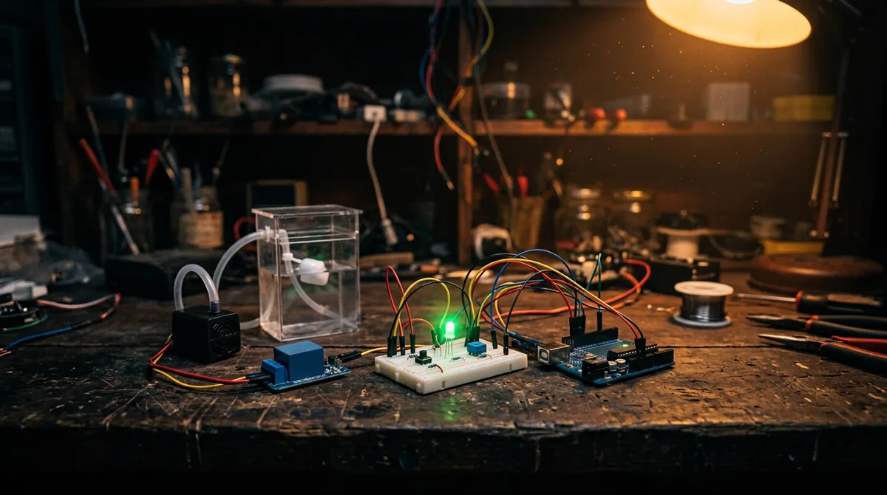

liga a bomba sozinha
O cérebro e os sentidos
Um chip que lê, decide e age.
O que é um microcontrolador e o laço que não para. O LED que diz "estou vivo", a boia que funciona como botão, a bomba que é um relé, o trimpot que mede a água e a decisão que liga tudo sozinha.
a etapa inteira em áudio · 13 min
Ouvir a etapa